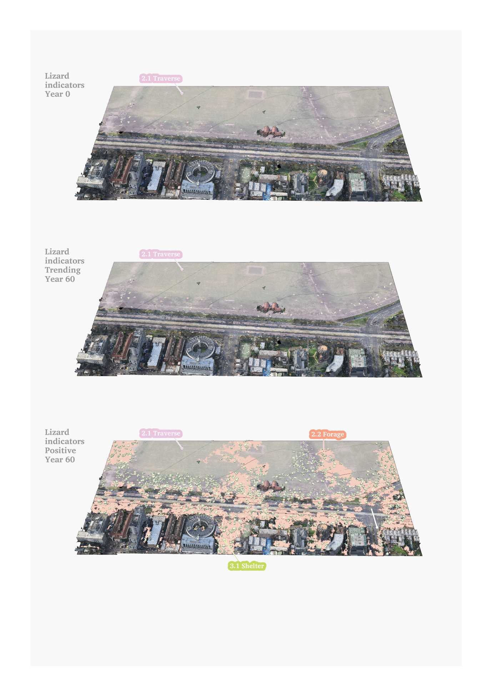

Appendix C: Personas, capabilities and relational indicators
The main text uses the capabilities approach to construct personas. This appendix supplies supporting evidence for capability choices and the technical operations that define relational indicators.
Overview of personas
Personas represent birds, lizards, and urban trees. Table 1 provides further information about each persona. The table describes example species while demonstrating how personas cover distinct lifespans, body sizes, and forms of social life.
‘Birds’ persona includes woodland birds, including red-rumped parrot (Psephotus haematonotus) and Superb fairywren (Malurus cyaneus), represent social, intelligent canopy dwellers 1. Their urban colonisation demonstrates behavioural plasticity through social learning that evolves into persistent cultures 2.
‘Lizards’ persona includes ground-dwelling lizards, such as Eastern blue-tongued lizard (Tiliqua scincoides), indicate movement patterns. Lizards require interconnected ground-level habitat mosaics. In Melbourne, roadways and buildings significantly constrain their movement 3.
‘Trees’ persona includes large old trees, including river red gums (Eucalyptus camaldulensis) and English elms (Ulmus sp.), represent a particular life stage. Evidence increasingly shows their problem-solving strategies and social function 4. In urban contexts, humans aggressively prune these trees and deprive them of their tree- fungi connections 5.
Table 1. Persona details | | Bird | Lizard | Tree | | — | — | — | — | | Representative Species | Red-rumped parrot (Psephotus haematonotus; Superb fairywren (Malurus cyaneus) | Eastern blue-tongued lizard (Tiliqua scincoides); Victorian Grassland Earless Dragon (Tympanocryptis pinguicolla) | River red gum (Eucalyptus camaldulensis); English elm (Ulmus sp.) | | Body size | 13–28 cm long; 8–77 g mass | 18–60 cm long; 0.2–0.9 kg mass | 20 m crown width; 1,000 kg mass6 | | Lifespan | 5–23 years | 15–30 years | Woodland: 500–1,000 years7 (senescent features after ~180 years8); Street: 20–95 years9 | | Reproduction | 3–7 eggs/clutch; 1–3 broods/year; Nest in shrubs and tree hollows | 10–20 live young; Every second year; Nest in fallen logs | Woodlands: 300,000–400,000 seeds kg⁻¹; Street: reliant on humans for reproduction10 | | Communication | Songs, calls, visual displays, flock cohesion | Tongue-flicks, head-bobs, chemical marks | Volatiles, root exudates, branch drops, mycorrhizal signalling11 | | Problem-solving | Cultural adoption, social learning12 | Trial-and-error learning, direct experience13 | Growth, mycorrhizal signalling, epigenetic shifts14 | | Socialisation | Family groups: 3–5; Flocks: 10–100 | Solitary except mating; Density: 1–2 adults/ha | Woodland: mycorrhizal networks link hundreds of trees15; Street: isolated16 | | Horizontal space use | Territory: 50–200 m²17 | Home range: 50–130 m radius18 | Woodland: Roots extend 10–20 m; seeds fall < 100 m but may drift km in floods19; Street: significantly less | | Vertical space use | Use tree canopies 0–45m tall | Spend >75% time under crevices, rocks, and logs; Forage in shrubs and grasses. 20 | Roots: 0–1 m deep; Canopy: ≤45 m tall21 | | Key barriers | Roads >15 m; High glass façades22 | Roads >5 m; Walls, solid fences23 | Compacted soil, paving 24 | | Dwelling requirements | Dense mid-storey, hollows, open lawns25 | Connected vegetation, coarse debris, warm basking spots26 | Open soil to regenerate, space to grow and decay27 | | Primary threats | Canopy loss, early hollow removal | Fragmentation, cats/dogs, roads | Removal of senescent trees, no natural recruitment, severed mycorrhizal links |
Overview of capabilities
We next sample capabilities across birds, lizards, and trees. The tables below show capabilities for birds, lizards, and trees respectively. Capabilities marked with an asterisk (*) indicate the subset we model using relational indicators.
We organise capability choices across two domains. The first domain covers scale: individual life, collective interaction, and multiple generations. The second domain uses Schlosberg’s framework of health, autonomy, and affiliation 28. This framework extends the capabilities approach from individuals to communities and ecosystems.
These capabilities demonstrate how lizards, birds, and trees participate in multispecies communities, hold knowledge, innovate, and contribute to urban living. We understand these contributions as ‘design’, which we define as the collective creation of conditions that support life in response to novel circumstances 29. To illustrate this concept, we include columns showing how capabilities create services for each persona as well as for others.
Table 2. Sample bird capabilities | Capability | Service to Self | Service to Others | Threats | Domain | Scale | |—-|—-|—-|—-|—-|—-| | Forage* | Forage on invertebrates and nectar | Support pollination30 and pest control | Young and non-native trees lack insect-attracting branches | Health | Individual life | | Bathe | Bathe and drink in freshwater sources , maintain feather condition, hydration | Seed dispersal via mud on feet | Water pollution, lack of water sources | Health | Individual life | | Move | Avoid predators, access resources | Provide seed rain that accelerates forest succession31 | Collisions with buildings, wind turbines | Health | Individual life | | Explore | Establish own home range | Regulate gene flow in populations | Habitat fragmentation, barriers | Autonomy | Individual life | | Defend | Defend territory from threats | Maintain ecosystem balance | Invasive species, human disturbance | Autonomy | Collective interaction | | Socialise* | Rest in communal roosting sites | Provide droppings that can enrich soil32, combat fragmentation at forest edges through endozoochory33 | Pruning for safety removes suitable roosts | Affiliation | Collective interaction | | Learn | Develop and express local dialects | Indicate ecosystem health to humans | Noise pollution, population isolation | Affiliation | Collective interaction | | Procreate* | Access nesting sites for breeding | Create structures used by other species | Natural hollows take centuries to form | Affiliation | Multiple generations |
Table 3. Sample lizard capabilities | Capability | Service to Self | Service to Others | Threats | Domain | Scale | |—-|—-|—-|—-|—-|—-| | Thermoregulate | Use warm and cool spots to stabilise body | Create nutrient patches through droppings at bask sites | Lack of diverse thermal environments | Health | Individual life | | Forage* | Secure food in low vegetation and canopy debris | Regulate insect populations34 | Pesticide use, lack of prey | Health | Individual life | | Drink | Maintain bodily functions | Contribute to small-scale water cycles | Water pollution, lack of water sources | Health | Individual life | | Shelter* | Use logs and fallen trees for cover and nesting | Build micro‑refugia used by others | Ground debris cleared by management regimes | Health | Multiple generations | | Move | Access various resources | Seed dispersal, nutrient distribution | Habitat fragmentation, roads | Autonomy | Collective interaction | | Defend | Defend territories and secure resources | Maintain population distribution | Habitat loss, invasive species | Autonomy | Collective interaction | | Seek shelter from threats | Avoid predation, harsh conditions | Create burrows used by other species | Removal of ground cover, debris | Autonomy | Collective interaction | | Socialise | Establish hierarchies | Indicate ecosystem health to researchers | Isolation of populations | Affiliation: | Collective interaction | | Explore* | Traverse routes to reach mates | Maintain gene flow | Inbreeding due to isolation | Affiliation | Collective interaction |
Table 4. Sample Tree capabilities | Capability | Service to Self | Service to Others | Threats | Domain | Scale | |—-|—-|—-|—-|—-|—-| | Perform photosynthesis | Produce energy for growth | Produce oxygen, sequester carbon | Air pollution, shading from buildings | Health | Individual life | | Access water and nutrients | Sustain growth and functions | Soil water retention, nutrient cycling | Soil compaction, drought | Health | Individual life | | Decay* | Grow structure that provides substrates for leaf, flowers and other organs. | Provide hollows, dead wood, and bark for arboreal dwellers to use as habitat35 | Pruning, restricted growing space | Health | Individual life | | Grow | Adapt to local environment | Cast shade, intercept rain, and alter microclimates36 | Uniform planting practices | Autonomy | Collective interaction | | Resist | Develop structures that can resist change | Create microrefugia in modified landscapes such as cities37 and paddocks38 | Removal of branches deemed hazardous by humans | Autonomy | Collective interaction | | Signal* | Exchange resources through fungal networks in soil | Build resilience to shocks in arboreal communitiess39 | Soil sterilization, fungicide use | Affiliation: | Collective interaction | | Host | Offer surfaces for symbiotes such as epiphytes and lichens | Create three dimensional variation in niches40, | Simplification of tree structure | Affiliation: | Collective interaction | | Release | Release pollen and seed | Provide food source | Lack of pollinators, seed dispersers | | | | Propagate* | Recruit new trees across suitable ground | Renew canopy services across time41 | Propagate* | Affiliation | Multiple generations |
Relational indicators
We next provide further information on our relational indicators. These indicators measure relational conditions inside the habitat volume that make a subset of capabilities available. Each indicator uses a three‑part code x.y.z where x marks persona, y marks capability and z marks the specific indicator. Each indicator pairs with one effort metric. We track three effort metrics: canopy volume released from human control; the number of supporting structures deployed; or area converted for non‑human use.
Table 4. Indicators | Indicator | What it measures | Raw VTK query | Raw schema row | Reporting status | Stream share | |—|—|—|—|—|—| | Bird.acquire.peeling-bark | Peeling bark volume | stat_peeling bark > 0 | sub-indicator | kept | 100% of Bird.acquire | | Bird.communicate.perch-branch | Perchable branch volume in senescing, snag, or artificial canopy | stat_perch branch > 0 AND forest_size in senescing\|snag\|artificial | sub-indicator | kept | 100% of Bird.communicate | | Bird.reproduce.hollow | Hollow volume | stat_hollow > 0 | sub-indicator | kept | 100% of Bird.reproduce | | Lizard.acquire.grass | Low vegetation ground | search_bioavailable == low-vegetation | sub-indicator | kept | 33.3% of Lizard.acquire | | Lizard.acquire.dead-branch | Dead branch volume | stat_dead branch > 0 | sub-indicator | kept | 33.3% of Lizard.acquire | | Lizard.acquire.epiphyte | Epiphyte volume | stat_epiphyte > 0 | sub-indicator | kept | 33.3% of Lizard.acquire | | Lizard.acquire | Combined acquire habitat | union of grass, dead-branch, and epiphyte | composite union | dropped | rebuilt from retained sub-indicators | | Lizard.communicate.not-paved | Ground or open space that is not roadway, busy roadway, or parking | (search_bioavailable in low-vegetation\|open space) AND NOT(search_urban_elements in roadway\|busy roadway\|parking) | sub-indicator | kept | 100% of Lizard.communicate | | Lizard.reproduce.nurse-log | Fallen log volume | stat_fallen log > 0 | sub-indicator | kept | 50% of Lizard.reproduce | | Lizard.reproduce.fallen-tree | Fallen or decayed tree volume | forest_size in fallen\|decayed | sub-indicator | kept | 50% of Lizard.reproduce | | Lizard.reproduce | Combined reproduce habitat | union of nurse-log and fallen-tree | composite union | dropped | rebuilt from retained sub-indicators | | Tree.acquire.moderated | Reduced pruning support | proposal_release_control_intervention == reduce-canopy-pruning | sub-indicator | dropped | excluded from stream graph | | Tree.acquire.autonomous | Eliminated pruning support | proposal_release_control_intervention == eliminate-canopy-pruning | sub-indicator | kept | 100% of Tree.acquire after exclusions | | Tree.acquire | Combined acquire habitat | union of moderated and autonomous | composite union | dropped | rebuilt from retained sub-indicators | | Tree.communicate.snag | Snag volume | forest_size == snag | sub-indicator | kept | 33.3% of Tree.communicate | | Tree.communicate.fallen | Fallen tree volume | forest_size == fallen | sub-indicator | kept | 33.3% of Tree.communicate | | Tree.communicate.decayed | Decayed tree volume | forest_size == decayed | sub-indicator | kept | 33.3% of Tree.communicate | | Tree.communicate | Combined communicate habitat | union of snag, fallen, and decayed | composite union | dropped | rebuilt from retained sub-indicators | | Tree.reproduce.smaller-patches-rewild | Partial recruit intervention | proposal_recruit_intervention == rewild-smaller-patch | sub-indicator | dropped | excluded from stream graph | | Tree.reproduce.larger-patches-rewild | Full recruit intervention | proposal_recruit_intervention == rewild-larger-patch | sub-indicator | kept | 100% of Tree.reproduce after exclusions | | Tree.reproduce | Combined reproduce habitat | union of smaller-patches-rewild and larger-patches-rewild | composite union | dropped | rebuilt from retained sub-indicators |
Indicator walkthrough
TODO: update with final indicators
We next provide an example of how the model tracks indicators within the habitat volume (Figure 4).

The area of grassland (2.1.1) as well as the volume of dead branches (2.1.2) and epiphytes (2.1.3) in tree canopies relate to the lizard’s capability to forage (Figure 4, orange). Humans can enable opportunities for lizards to express this capability by converting ground surfaces to grasslands (2.1.1), releasing tree canopies from human control to allow dead branches to develop (2.1.2), and installing native mistletoe in tree canopies (2.1.3).
The area of unpaved ground relates to the lizard’s capability to explore (2.2.1) (Figure 4, pink). Humans can provide opportunities for exploration through removing hard surfaces. Sheltered sites including fallen nurse logs (2.3.1) and fallen trees (2.3.2) relate to the lizard’s capability to shelter (Figure 4, green). Humans can support this capability through retaining fallen branches (2.3.1) and trees (2.3.2) in situ.
References
Footnotes
Gisela Kaplan. (2015). Bird minds: Cognition and behaviour of Australian native birds. Melbourne, CSIRO.↩︎
Aplin. (2019). TODO: get full citation.↩︎
Holly Kirk, Caragh Threlfall, Kylie Soanes, Cristina Ramalho, Kirsten Parris, Marco Amati, Sarah A. Bekessy, and Luis Mata. (2018). Linking nature in the city: a framework for improving ecological connectivity across the City of Melbourne. Melbourne, City of Melbourne.↩︎
Stanislav Roudavski. (2022). Design for all life: editorial. Architect Victoria 3, 32-37. https://doi.org/10/gr3r7f; Julian Rutten, Alexander Holland, and Stanislav Roudavski. (2024). Plants as designers of better futures: can humans let them lead?. Plant Perspectives 2(1), 92-139. https://doi.org/10.3197/whppp.63845494909729↩︎
Philip C. Stevenson, Martin I. Bidartondo, Robert Blackhall‐Miles, Timothy R. Cavagnaro, Amanda Cooper, Benoît Geslin, Hauke Koch, Mark A. Lee, Justin Moat, Richard O’Hanlon, Henrik Sjöman, Adriano Sofo, Kalliopi Stara, and Laura M. Suz. (2020). The state of the world’s urban ecosystems: What can we learn from trees, fungi, and bees?. Plants People Planet 2(5). https://doi.org/10.1002/ppp3.10143↩︎
Mathias I. Disney, Matheus Boni Vicari, Andrew Burt, Kim Calders, Simon L. Lewis, Pasi Raumonen, and Phil Wilkes. (2018). Weighing Trees with Lasers: Advances, Challenges and Opportunities. Interface Focus 8(2), 20170048. https://doi.org/10.1098/rsfs.2017.0048↩︎
John Charles Gripper Banks. (1997). Tree Ages and Ageing in Yellow Box. In The Coming of Age. Forest Age and Heritage Values, edited by John Dargavel, 17–28. Canberra, Environment Australia.↩︎
Philip Gibbons and David B. Lindenmayer. (2002). Tree Hollows and Wildlife Conservation in Australia. Collingwood, CSIRO.↩︎
Darren S. Le Roux, Karen Ikin, David B. Lindenmayer, Adrian D. Manning, and Philip Gibbons. (2014). The future of large old trees in urban landscapes. PLOS ONE 9(6), e99403. https://doi.org/10.1371/journal.pone.0099403↩︎
Darren S. Le Roux, Karen Ikin, David B. Lindenmayer, Adrian D. Manning, and Philip Gibbons. (2014). The future of large old trees in urban landscapes. PLOS ONE 9(6), e99403. https://doi.org/10.1371/journal.pone.0099403↩︎
Monika A. Gorzelak, Amanda K. Asay, Brian J. Pickles, and Suzanne W. Simard. (2015). Inter-Plant Communication Through Mycorrhizal Networks Mediates Complex Adaptive Behaviour in Plant Communities. AoB Plants 7, plv050. https://doi.org/10/gcbkmg↩︎
Gisela Kaplan. (2015). Bird minds: Cognition and behaviour of Australian native birds. Melbourne, CSIRO.↩︎
Mark James Learmonth. (2020). The matter of non-avian reptile sentience, and why it “matters” to them: a conceptual, ethical and scientific review. Animals 10(5), 901. https://doi.org/10/gh826m↩︎
José Tomás Ibarra, Kristina Cockle, Tomás Altamirano, Yntze Hoek, Suzanne Simard, Cristián Bonacic, and Kathy Martin. (2020). Nurturing Resilient Forest Biodiversity: Nest Webs as Complex Adaptive Systems. Ecology and Society 25(2). https://doi.org/10/gnb4g8↩︎
Philip C. Stevenson, Martin I. Bidartondo, Robert Blackhall‐Miles, Timothy R. Cavagnaro, Amanda Cooper, Benoît Geslin, Hauke Koch, Mark A. Lee, Justin Moat, Richard O’Hanlon, Henrik Sjöman, Adriano Sofo, Kalliopi Stara, and Laura M. Suz. (2020). The state of the world’s urban ecosystems: What can we learn from trees, fungi, and bees?. Plants People Planet 2(5). https://doi.org/10.1002/ppp3.10143↩︎
Philip C. Stevenson, Martin I. Bidartondo, Robert Blackhall‐Miles, Timothy R. Cavagnaro, Amanda Cooper, Benoît Geslin, Hauke Koch, Mark A. Lee, Justin Moat, Richard O’Hanlon, Henrik Sjöman, Adriano Sofo, Kalliopi Stara, and Laura M. Suz. (2020). The state of the world’s urban ecosystems: What can we learn from trees, fungi, and bees?. Plants People Planet 2(5). https://doi.org/10.1002/ppp3.10143↩︎
Holly Kirk, Caragh Threlfall, Kylie Soanes, Cristina Ramalho, Kirsten Parris, Marco Amati, Sarah A. Bekessy, and Luis Mata. (2018). Linking nature in the city: a framework for improving ecological connectivity across the City of Melbourne. Melbourne, City of Melbourne.↩︎
Holly Kirk, Caragh Threlfall, Kylie Soanes, Cristina Ramalho, Kirsten Parris, Marco Amati, Sarah A. Bekessy, and Luis Mata. (2018). Linking nature in the city: a framework for improving ecological connectivity across the City of Melbourne. Melbourne, City of Melbourne.↩︎
Department of Environment, Climate Change and Water NSW. (2011). National Recovery Plan for White Box—Yellow Box—Blakely’s Red Gum Grassy Woodland and Derived Native Grassland: A Critically Endangered Ecological Community. Sydney, Department of Environment, Climate Change and Water New South Wales.↩︎
Holly Kirk, Caragh Threlfall, Kylie Soanes, Cristina Ramalho, Kirsten Parris, Marco Amati, Sarah A. Bekessy, and Luis Mata. (2018). Linking nature in the city: a framework for improving ecological connectivity across the City of Melbourne. Melbourne, City of Melbourne.↩︎
Mathias I. Disney, Matheus Boni Vicari, Andrew Burt, Kim Calders, Simon L. Lewis, Pasi Raumonen, and Phil Wilkes. (2018). Weighing Trees with Lasers: Advances, Challenges and Opportunities. Interface Focus 8(2), 20170048. https://doi.org/10.1098/rsfs.2017.0048↩︎
Holly Kirk, Caragh Threlfall, Kylie Soanes, Cristina Ramalho, Kirsten Parris, Marco Amati, Sarah A. Bekessy, and Luis Mata. (2018). Linking nature in the city: a framework for improving ecological connectivity across the City of Melbourne. Melbourne, City of Melbourne.↩︎
Holly Kirk, Caragh Threlfall, Kylie Soanes, Cristina Ramalho, Kirsten Parris, Marco Amati, Sarah A. Bekessy, and Luis Mata. (2018). Linking nature in the city: a framework for improving ecological connectivity across the City of Melbourne. Melbourne, City of Melbourne.↩︎
Philip C. Stevenson, Martin I. Bidartondo, Robert Blackhall‐Miles, Timothy R. Cavagnaro, Amanda Cooper, Benoît Geslin, Hauke Koch, Mark A. Lee, Justin Moat, Richard O’Hanlon, Henrik Sjöman, Adriano Sofo, Kalliopi Stara, and Laura M. Suz. (2020). The state of the world’s urban ecosystems: What can we learn from trees, fungi, and bees?. Plants People Planet 2(5). https://doi.org/10.1002/ppp3.10143↩︎
Holly Kirk, Caragh Threlfall, Kylie Soanes, Cristina Ramalho, Kirsten Parris, Marco Amati, Sarah A. Bekessy, and Luis Mata. (2018). Linking nature in the city: a framework for improving ecological connectivity across the City of Melbourne. Melbourne, City of Melbourne.↩︎
Holly Kirk, Caragh Threlfall, Kylie Soanes, Cristina Ramalho, Kirsten Parris, Marco Amati, Sarah A. Bekessy, and Luis Mata. (2018). Linking nature in the city: a framework for improving ecological connectivity across the City of Melbourne. Melbourne, City of Melbourne.↩︎
Karen Ikin, Darren S. Le Roux, Laura Rayner, Nelida R. Villaseñor, Kathy Eyles, Philip Gibbons, Adrian D. Manning, and David B. Lindenmayer. (2015). Key lessons for achieving biodiversity‐sensitive cities and towns. Ecological management & restoration 16(3), 206–214. https://doi.org/10.1111/emr.12180↩︎
David Schlosberg. (2014). Ecological Justice for the Anthropocene. In Political Animals and Animal Politics, edited by Marcel Wissenburg and David Schlosberg, 75-89. Houndmills, Palgrave Macmillan.↩︎
Stanislav Roudavski. (2022). Design for all life: editorial. Architect Victoria 3, 32-37. https://doi.org/10/gr3r7f; Julian Rutten, Alexander Holland, and Stanislav Roudavski. (2024). Plants as designers of better futures: can humans let them lead?. Plant Perspectives 2(1), 92-139. https://doi.org/10.3197/whppp.63845494909729↩︎
Tim Low. (2014). Where Song Began: Australia’s Birds and How They Changed the World. Melbourne, AU, Viking.↩︎
Tommaso La Mantia et al., “Vertebrate-Mediated Seed Rain and Artificial Perches Contribute to Overcome Seed Dispersal Limitation in a Mediterranean Old Field,” Restoration Ecology 27, no. 6 (2019): 1393–400, https://doi.org/10/gr2jn6.↩︎
David B. Lindenmayer and William F. Laurance. (2016). The ecology, distribution, conservation and management of large old trees. Biological Reviews 92(132), 1434–1458. https://doi.org/10.1111/brv.12290↩︎
Harsh Yadav, Yuki Iwachido, and Takehiro Sasaki. (2025). Canopy cover instigating feces deposition on paved roads in urban areas. Ecological Research 40(5), e70009. https://doi.org/10/g93n9z↩︎
Holly Kirk, Caragh Threlfall, Kylie Soanes, Cristina Ramalho, Kirsten Parris, Marco Amati, Sarah A. Bekessy, and Luis Mata. (2018). Linking nature in the city: a framework for improving ecological connectivity across the City of Melbourne. Melbourne, City of Melbourne.↩︎
David B. Lindenmayer and William F. Laurance. (2016). The ecology, distribution, conservation and management of large old trees. Biological Reviews 92(132), 1434–1458. https://doi.org/10.1111/brv.12290↩︎
David B. Lindenmayer. (2017). Conserving Large Old Trees as Small Natural Features. Biological Conservation 211(B), 51–59. https://doi.org/10.1016/j.biocon.2016.11.012↩︎
Karen Stagoll, David B. Lindenmayer, Emma Knight, Joern Fischer, and Adrian D. Manning. (2012). Large Trees are Keystone Structures in Urban Parks. Conservation Letters 5(2), 115–122. https://doi.org/10/f35x6j↩︎
Darren S. Le Roux, Karen Ikin, David B. Lindenmayer, Adrian D. Manning, and Philip Gibbons. (2018). The value of scattered trees for wildlife: contrasting effects of landscape context and tree size. Diversity and Distributions 24(1), 69-81. https://doi.org/10.1111/ddi.12658↩︎
José Tomás Ibarra, Kristina Cockle, Tomás Altamirano, Yntze Hoek, Suzanne Simard, Cristián Bonacic, and Kathy Martin. (2020). Nurturing Resilient Forest Biodiversity: Nest Webs as Complex Adaptive Systems. Ecology and Society 25(2). https://doi.org/10/gnb4g8↩︎
Siria Gámez and Nyeema C. Harris. (2022). Conceptualizing the 3D Niche and Vertical Space Use. Trends in Ecology & Evolution 37(11), 953–962. https://doi.org/10.1016/j.tree.2022.06.012↩︎
Department of Environment, Climate Change and Water NSW. (2011). National Recovery Plan for White Box—Yellow Box—Blakely’s Red Gum Grassy Woodland and Derived Native Grassland: A Critically Endangered Ecological Community. Sydney, Department of Environment, Climate Change and Water New South Wales.↩︎